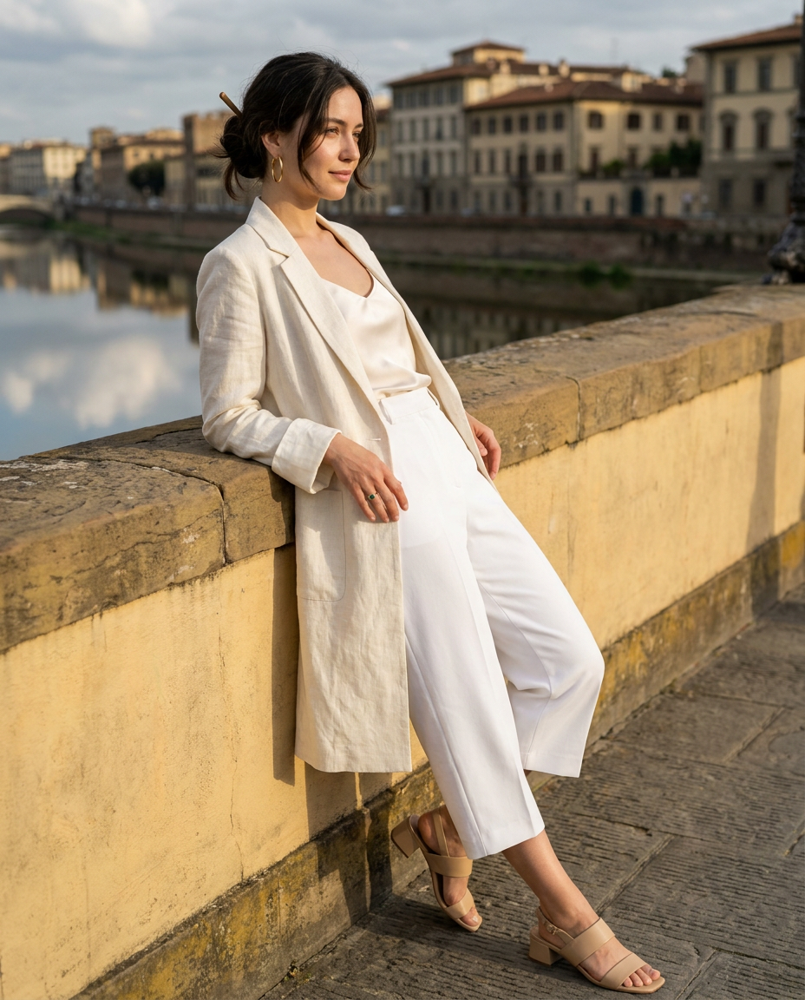
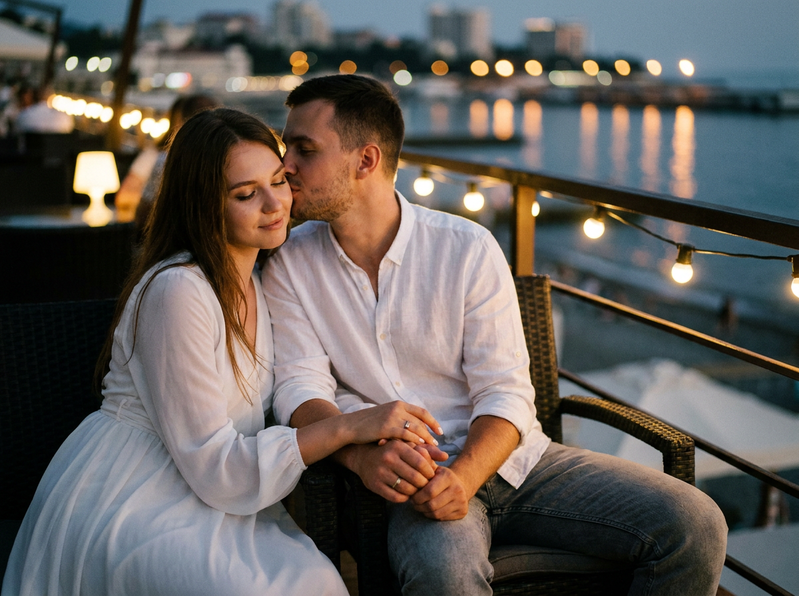
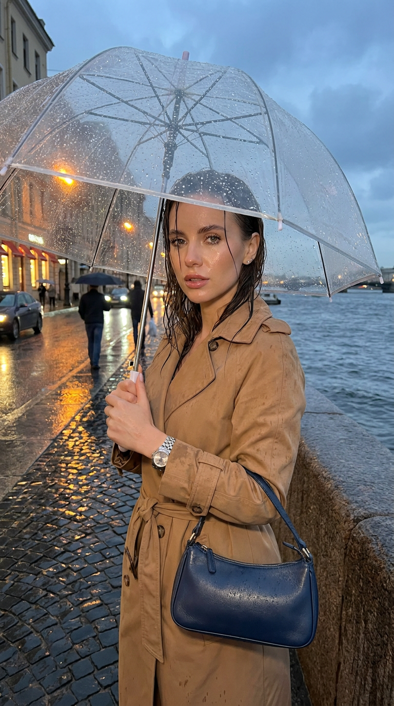
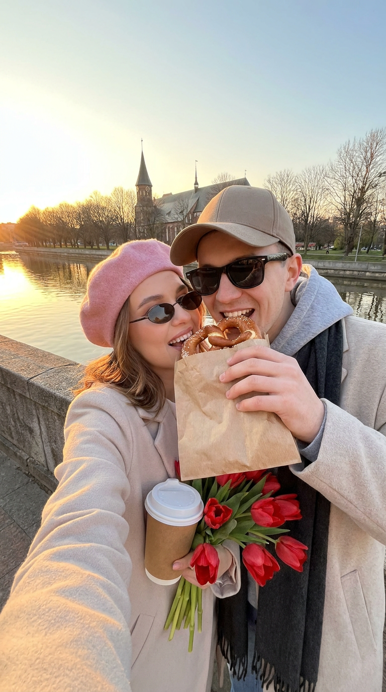
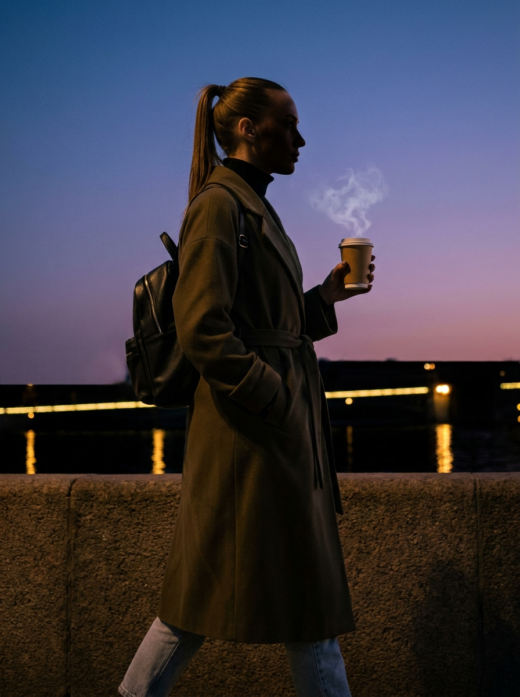
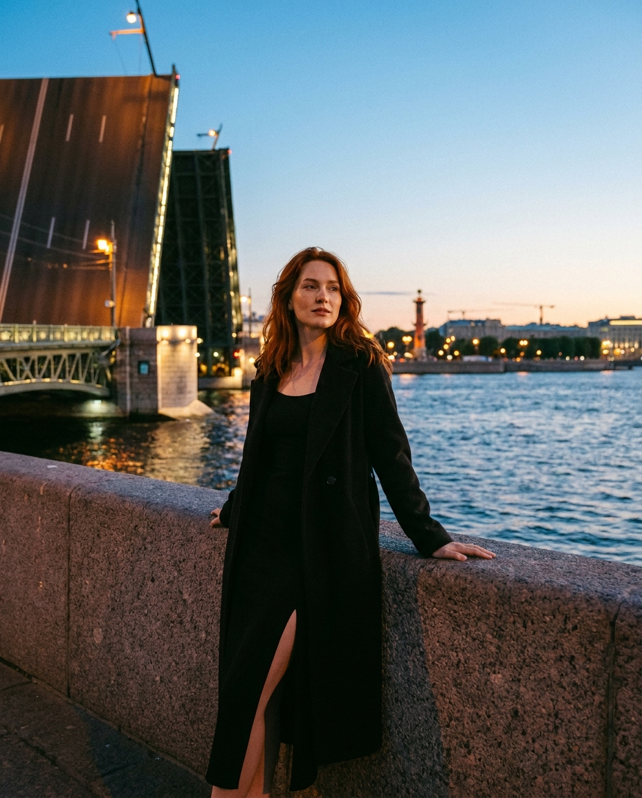
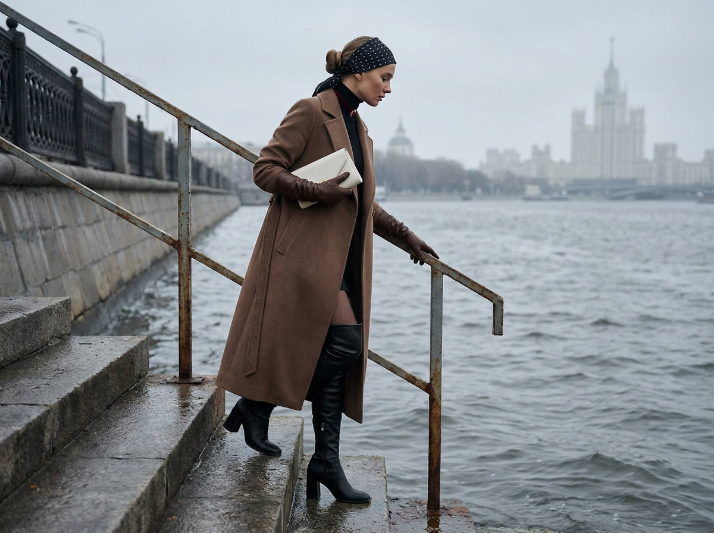
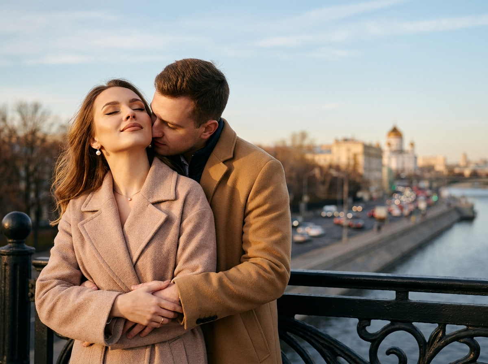
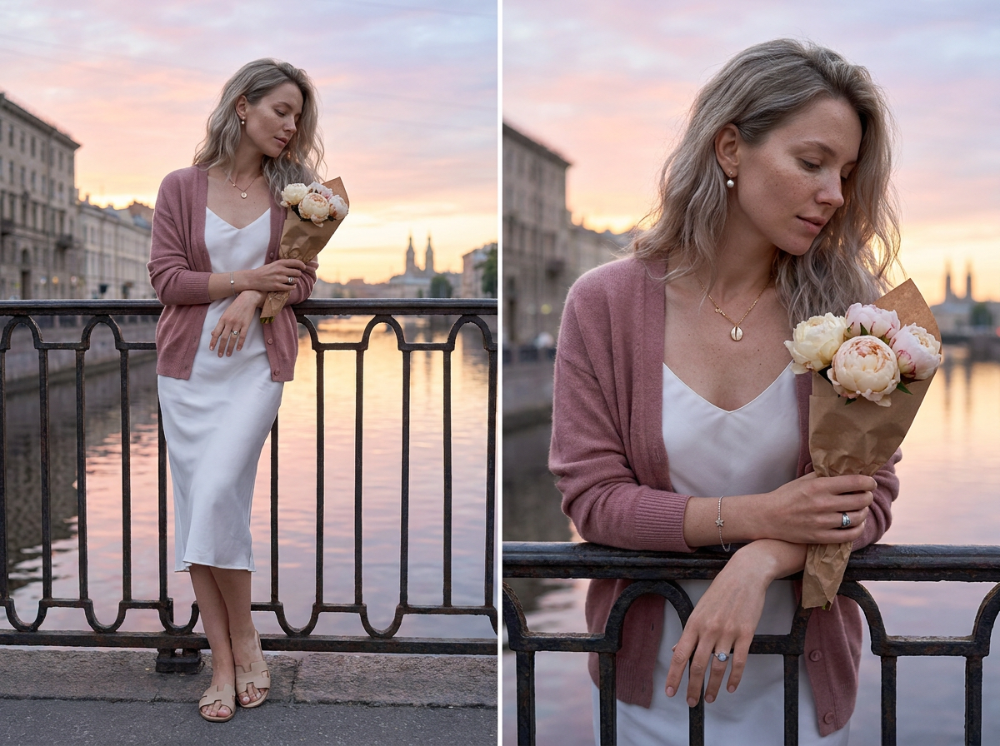
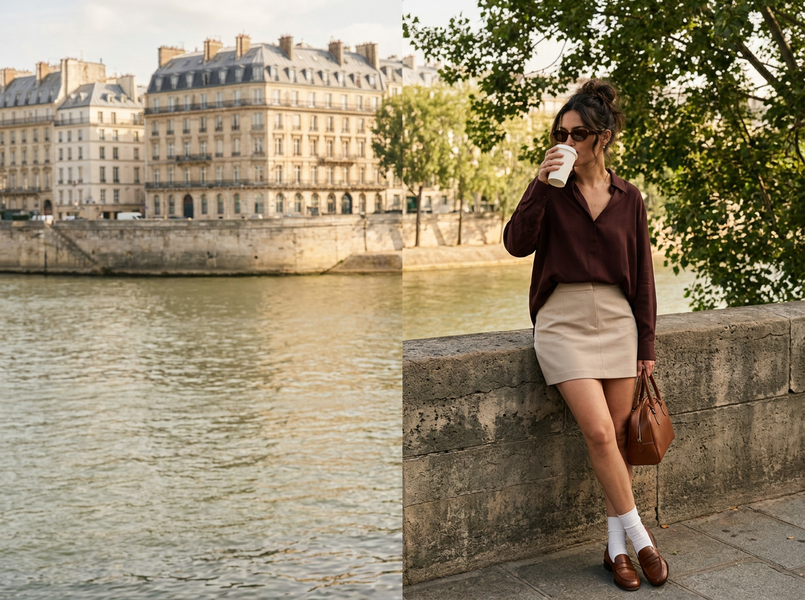

ИИ-фото на набережной: 10 промптов для нейросети

Обычные фотографии на набережной часто зависят от погоды, света, одежды и удачного момента. Генерация помогает собрать нужный кадр заранее: выбрать город, настроение, позу и даже отражения в воде.
Внутри — 10 готовых сценариев для ИИ-фото: от спокойного fashion-портрета и дождливой сцены до свидания в Сочи, силуэта с кофе, объятий на мосту и прогулки по берегу Сены.
Как сгенерировать такое фото: пошагово
Нужен снимок анфас при ровном свете, лицо в кадре целиком, без тёмных очков и головных уборов. Разрешение от 1000 пикселей по короткой стороне. Чем чётче исходник, тем точнее модель повторит черты.
Выберите сценарий ниже и нажмите «Копировать» — текст уйдёт в буфер целиком, вместе с командой сохранения внешности. Эта команда стоит первой строкой и отвечает за то, чтобы на выходе было ваше лицо, а не случайное.
Кнопка «Сгенерировать» рядом с каждым промптом открывает модель в новой вкладке. Nano Banana Pro работает с референсом лица — в отличие от моделей, которые генерируют портрет с нуля и узнаваемость теряют.
Промпт — в поле ввода, портрет — через загрузку референса. Порядок значения не имеет, но без референса команда сохранения внешности работать не будет: модели нечего сохранять.
Для сторис и ленты берите 9:16, для превью и обложек — 4:3. Первый результат редко идеален: если поза или свет ушли не туда, поправьте соответствующую часть промпта и запустите заново. Обычно хватает двух-трёх итераций.
10 промптов для генерации
1. Льняной образ у реки
Строго сохранить внешность по загруженному референсу: черты лица, пропорции, мимику и текстуру кожи без изменений. Вертикальный гиперреалистичный портрет в соотношении 4:5. Девушка стоит спиной к парапету старинной набережной, ладони лежат на камне позади, корпус немного повёрнут к объективу, поза свободная. На ней удлинённый жакет цвета слоновой кости из рельефного льна с широкими отворотами рукавов, молочная шёлковая майка, белые брюки-кюлоты с чёткой стрелкой и бежевые кожаные босоножки на невысоком квадратном каблуке. Волосы собраны в слегка растрёпанный низкий пучок с деревянной шпилькой, у лица выбились мягкие кудри. Персиковый тон, лёгкий бронзер, влажный блеск на губах, большие золотые серьги-кольца и тонкое кольцо с изумрудом. Жёлтый камень перил, спокойная вода с облачными отражениями, на другом берегу дома с черепичными крышами. Мягкий естественный дневной свет, фотореализм, высокая детализация ткани и кожи.
2. Тёплый поцелуй на террасе

Строго сохранить внешность по загруженному референсу: черты лица, пропорции, мимику и текстуру кожи без изменений. Фотореалистичная кинематографичная сцена на летней террасе с видом на вечернюю набережную Сочи. Молодая пара сидит рядом: девушка в белом платье, мужчина в белой рубашке и серых джинсах слегка наклоняется к ней и целует в щёку. Их сцепленные руки вынесены на передний план и становятся главным акцентом кадра. Средний план по пояс, пара расположена левее центра, линия берега проходит по верхней трети изображения. Внизу и вдали — мягкие огни города, тёмная вода с отражениями, уютное боке вдоль набережной. Лицо и кисти освещают тёплые фонари летника, по контуру заметен слабый холодный свет от города. Низкая контрастность, мягкие тени, тонкая плёночная зернистость. Настроение тихое, интимное, элегантно-романтичное, атмосфера Сочи после заката.
3. Дождь и прозрачный зонт

Строго сохранить внешность по загруженному референсу: черты лица, пропорции, мимику и текстуру кожи без изменений. Вертикальная композиция 9:16, поясной план, камера на уровне груди. Девушка смотрит прямо в объектив и держит прозрачный купольный зонт: её лицо видно сквозь плёнку, покрытую отдельными каплями. В свободной руке — маленькая тёмно-синяя кожаная сумка-багет. На ней удлинённый тренч оттенка верблюжьей шерсти, стянутый широким поясом. Распущенные волосы намокли и прилипли ко лбу и вискам; макияж водостойкий, ровный тон, тушь, прозрачный влажный блеск на губах. На запястье металлические часы, в ушах маленькие серьги-гвоздики. Дождливая набережная, мокрая брусчатка отражает витрины и фонари, серая волнистая вода, вдали размытые люди под зонтами и автомобильные огни. Сверху холодный свет пасмурного неба, на лице и камнях тёплые пятна витрин. Максимально детализированные капли на зонте, коже и мокрой поверхности, фотореализм.
4. Селфи с кренделем

Строго сохранить внешность по загруженному референсу: черты лица, пропорции, мимику и текстуру кожи без изменений. Живое уличное селфи пары на городской набережной в момент заката. Парень и девушка стоят вплотную, улыбаются и одновременно тянутся откусить большой крендель. Мужчина держит его в крафтовом пакете; у девушки в руках бумажный стакан кофе и букет ярко-красных тюльпанов, она прижимается плечом к спутнику. Девушка: волосы, розовый берет, узкие тёмные очки, светлое пальто или жакет, сияющий ровный тон, мягкая коррекция лица, тёплый румянец, длинные ресницы, тонкая стрелка, аккуратные брови и нюдово-розовые губы, свежий soft glam. Парень: кепка, чёрные очки, серый худи, длинный тёмный шарф, светлая куртка или пальто. На фоне парапет, гладкая вода с золотыми отражениями, старинная церковь или собор, голые деревья. Тёплый уютный lifestyle-кадр, спонтанная романтика весеннего вечера.
5. Силуэт с кофе в сумерках

Строго сохранить внешность по загруженному референсу: черты лица, пропорции, мимику и текстуру кожи без изменений. Вертикальный кадр 9:16, полный рост, съёмка сбоку со стороны тени. Девушка идёт вдоль парапета: одна рука спрятана в кармане, другой она держит дымящийся бумажный стакан. На плечах длинное пальто-халат тёмно-хаки с поясом, руки не продеты в рукава; под ним узкая чёрная водолазка и светлые джинсы. Волосы затянуты в высокий тугой хвост, макияж — серый smoky eyes и губы nude. За спиной небольшой чёрный кожаный рюкзак. Закат уже сменился сумерками: сверху небо глубокого синего цвета, у горизонта фиолетовый оттенок, чёрная вода прорезана тонкими золотыми полосами отражённых огней. Контровой свет очерчивает фигуру сзади, лицо остаётся в тени, хорошо видны только силуэт и клубы пара от напитка. Драматичная разница между светом и тенью, высокая детализация, реалистичная городская атмосфера.
6. Luxury-портрет у моста

Строго сохранить внешность по загруженному референсу: черты лица, пропорции, мимику и текстуру кожи без изменений. Фотореалистичный fashion-editorial портрет с лицом по референсу. Девушка стоит у каменной набережной на фоне реки и разводного моста в сумерках. Одна ладонь опирается на гранитный парапет, вторая свободно лежит на камне; одна нога немного вынесена вперёд, корпус развёрнут к камере. На ней длинное чёрное платье с высоким разрезом и тёмное пальто или жакет, небрежно наброшенное на плечи. Длинные каштаново-рыжие волосы распущены, макияж естественный, взгляд спокойный и задумчивый, направлен в сторону. Дорогая кинематографичная эстетика, мягкая романтика большого города, luxury editorial. Съёмка на blue hour или во время заката: тёплый свет касается лица и волос, фон остаётся холодным голубым, сзади деликатная подсветка. Мягкие тени, натуральная текстура кожи, лёгкое плёночное зерно. Full-frame camera, объектив 35 мм, f/2.8, 1/500 сек, ISO 200.
7. Спуск к серой воде

Строго сохранить внешность по загруженному референсу: черты лица, пропорции, мимику и текстуру кожи без изменений. Вертикальный кадр 3:4, средний план, камера на уровне талии, вид сбоку. Девушка спускается по каменным ступеням прямо к воде: одна рука держится за перила, одна ступня стоит на нижней ступени почти у самой реки. На ней длинное прямое кашемировое пальто оттенка кофе с молоком, чёрная водолазка, кожаные перчатки до локтя и ботфорты на устойчивом квадратном каблуке. Волосы собраны в низкий гладкий пучок, скрытый чёрным шёлковым платком в мелкий горох. Коричневый smoky eyes, телесная помада, бархатный чокер с маленьким рубином, клатч-конверт цвета слоновой кости. Пасмурный день, сильная рябь на воде, серое небо, на дальнем берегу сталинские высотки в дымке. Холодный рассеянный свет без резких теней. Передать фактуру кожи перчаток, мягкость кашемира и шероховатость бетонных ступеней, высокая детализация.
8. Объятия на городском мосту

Строго сохранить внешность по загруженному референсу: черты лица, пропорции, мимику и текстуру кожи без изменений. Средний план по пояс, камера на уровне глаз, пара смещена в левую часть кадра, справа остаётся размытый городской фон. Мужчина стоит за женщиной, прижимается лицом к её виску и шее и обхватывает талию. Женщина обращена к объективу, слегка откинула голову, глаза закрыты, одна ладонь лежит поверх его руки. У неё ровная кожа, тонкие стрелки, удлинённые ресницы, мягкие нюдовые тени, матовый нюдовый тинт с тёплым подтоном; ногти средней длины, миндалевидные, кремово-нюдового оттенка #E8D5C0. На мужчине однобортное пальто цвета верблюжьей шерсти #C19A6B из плотной матовой шерсти, под ним тёмный пиджак и видимый воротник. Женщина одета в объёмное бежево-розовое пальто #D4B8A0 из мягкой ворсистой шерсти с широкими лацканами и свободным поясом. Тесная, нежная поза, реалистичные ткани, спокойный городской фон, мягкий рассеянный свет.
9. Пионы у чугунных перил

Строго сохранить внешность по загруженному референсу: черты лица, пропорции, мимику и текстуру кожи без изменений. Вертикальный гиперреалистичный редакционный портрет 4:5. Девушка стоит в три четверти и слегка опирается бедром на чугунные перила набережной. Оба локтя лежат на верхней перекладине, кисти расслабленно свисают, пальцы слегка переплетены. В правой руке короткий букет из пяти крупных пионов нежно-розового и кремового цвета, завёрнутый в крафтовую бумагу. Голова чуть наклонена вправо, взгляд опущен в сторону цветов, выражение умиротворённое, губы сомкнуты, заметна мягкая полуулыбка. Длинные русые волосы до середины спины имеют холодный пепельный оттенок, уложены в крупные небрежные пляжные волны. Глубокий пробор справа: основная масса волос падает на левое плечо и спину, правая сторона шеи и ухо открыты. Натуральный макияж, мягкий дневной свет, детальная фактура металла, бумаги, лепестков и кожи, спокойная вода и городская набережная на фоне.
10. Кофе на берегу Сены

Строго сохранить внешность по загруженному референсу: черты лица, пропорции, мимику и текстуру кожи без изменений. Вертикальная фотография в полный рост на набережной Парижа, у берега Сены. На переднем плане массивная каменная стена, напротив — исторические здания в стиле османского классицизма с узорчатыми окнами и серыми мансардными крышами. Справа кадр частично обрамляют зелёные ветви. Женщина стоит боком, слегка прислонившись к стене; одна нога согнута и игриво поднята назад. В одной руке белый бумажный стакан с кофе, из которого она пьёт, в другой — структурированная коричневая кожаная сумка. Одежду не менять: тёмно-бордовая свободная блуза, светло-бежевая мини-юбка, белые детали образа по референсу. Камера на уровне глаз, снимает с небольшого расстояния, фигура расположена по центру на фоне реки. Яркий естественный дневной свет, мягкое солнце проходит сквозь облака, лёгкие блики на фасадах и мягкие тени на модели. Реалистичная архитектура, натуральная кожа, высокая детализация.
Что важно учесть в этом стиле
Набережная работает как готовая линия перспективы: парапет, ступени или край воды ведут взгляд к модели. Поэтому в промпте лучше сразу фиксировать ракурс, план и положение героя — например, полный рост сбоку или поясной кадр на уровне глаз.
Свет меняет настроение сильнее одежды. Для романтической сцены подойдут тёплые фонари и отражения в воде, для fashion-портрета — контраст заката с холодным blue hour, а для дождя — смешение серого неба и жёлтых витрин. Если нужен референс лица, отдельно контролируйте руки, пальцы, очки и мелкие аксессуары: именно они чаще всего искажаются.
Идеи для вариаций
- Замените реку на морскую набережную и добавьте сильный ветер, летящий шарф и брызги.
- Перенесите сцену с кофе на раннее утро: пустой променад, молочный туман и холодный рассеянный свет.
- Сделайте пару старше, измените одежду на вечерние костюмы и добавьте отражение в мокром камне.
- Попросите нейросеть снять образ на плёнку 35 мм с лёгким засветом по краям кадра.
- Добавьте велосипед, бумажный пакет с выпечкой или раскрытую книгу как естественный предмет в руках.
Как собрать свой промпт
Начните с формата и типа кадра: вертикаль 4:5, 9:16 или 3:4, портрет по пояс либо полный рост. Затем задайте локацию, положение тела, направление взгляда и главный предмет в руках. После этого опишите одежду от верхнего слоя к обуви, а макияж и причёску вынесите отдельным блоком.
В финале укажите свет, время суток, фон, оптику и детализацию. Для портрета можно добавить объектив 35 или 50 мм, диафрагму f/2.8 и натуральную текстуру кожи. Если результат расплывается, сократите сцену до 2–3 ключевых объектов и сделайте 4–6 генераций с одной композицией, меняя только свет или выражение лица.
Ошибки, из-за которых кадр не получается
- Слишком много действий. Когда модель одновременно пьёт кофе, идёт, поправляет волосы и смотрит в воду, нейросеть путает позу. Оставьте одно основное движение.
- Не указан план. Без слов полный рост, по пояс или крупный портрет камера может обрезать обувь, руки или важную часть фона.
- Размытая география. Если нужен Париж, Сочи или конкретный городской силуэт, назовите архитектуру, берег и характер зданий.
- Конфликт света. Тёплый дневной солнцепёк и холодный фонарь одновременно без пояснения дают неестественные тени.
- Перегруженный референс. Чем больше лиц, предметов и мелких узоров в исходном изображении, тем выше риск ошибок в чертах и фактурах.
Частые вопросы
Как сделать такое ИИ-фото бесплатно?
Попробуйте Kandinsky и Шедеврум: они подходят для генерации по тексту, но могут хуже повторять лицо и сложную позу. Krea AI и Arena.ai удобны для быстрых экспериментов и сравнения вариантов, однако бесплатный доступ обычно ограничивает число генераций, скорость или разрешение. Референс можно загрузить не во всех режимах, а сходство лица не гарантируется. Для точного результата подготовьте чёткое фото без сильных фильтров и сделайте несколько попыток.
Как сохранить лицо по референсу?
Используйте хорошо освещённый портрет анфас или в лёгком три четверти, без очков и волос на лице. В настройках выбирайте режим изображения по референсу, если он доступен. Не перегружайте запрос описанием новых черт: лучше подробно задать одежду, свет и окружение, а внешность оставить исходному фото.
Почему нейросеть искажает руки и пальцы?
Кисти часто оказываются в центре сложной композиции: они держат стакан, букет или сцеплены с рукой другого человека. Опишите положение каждой руки отдельно, уберите лишние жесты и попросите естественную анатомию. Если генератор поддерживает редактирование, исправляйте кисти локально, а не пересобирайте весь кадр.
Как добиться реалистичных отражений в воде?
Укажите, что отражения должны быть мягкими, вытянутыми по ряби и соответствовать источникам света на берегу. Для ночной сцены добавьте тёмную воду, золотые дорожки от фонарей и небольшие волны. Не просите зеркальную гладь, если в кадре сильный ветер или дождь: физически правдоподобные условия помогают модели.